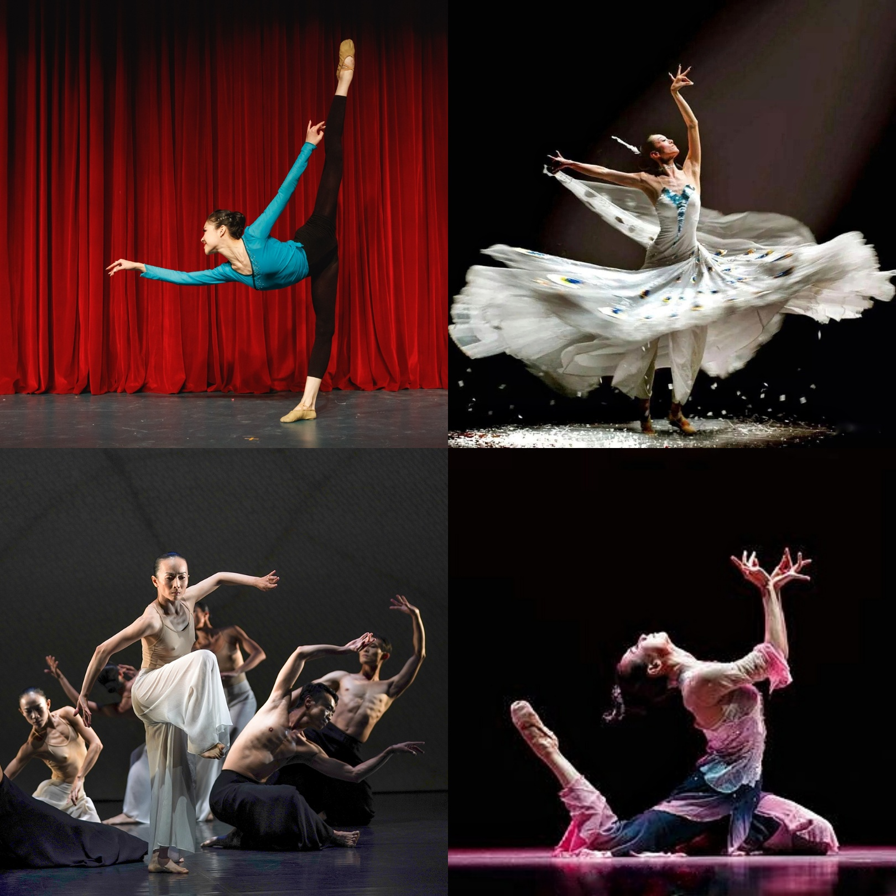

Chinese dance is a form of performing arts that involves rhythmic body movements combined with music and costumes. It refers to a series of different dance genres that have evolved throughout the centuries. Each region and ethnic group has unique dances and traditions.
Chinese dance covers a wide range, from folk dances to performances in opera and ballet, and may be used in public celebrations, rituals and ceremonies.
Chinese dance, with its vivid whirling ribbons, elaborate stylized movements, ethnically diverse costumes, and stories of China's past and its peoples, offers a tantalising glimpse into a complex and ancient culture.

© Henin 于海宁 18011081